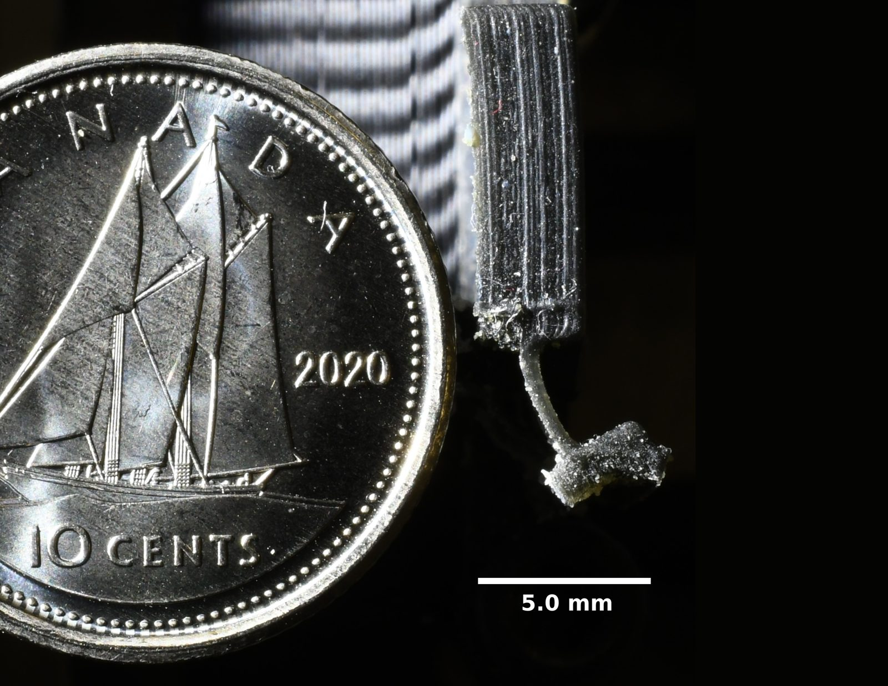

Research
Master's and Bachelor's research.

3D Printed Millimeter-scale Robot
3D printed parallel robot driven by piezoelectric actuators: 65.6 mm² workspace, tracing paths at 10 Hz.
Robotics3D printingFEA
Flexible Linear-to-Rotary Transmission
Printed compliant mechanism turning a sub-millimeter push into ~29° of rotation. Published at IEEE/ASME AIM 2022.
Compliant mechanismsFEA3D printing
Trajectory Generation Tools
MATLAB tools that generate actuator signals and end-effector paths for testing the robot, exporting to Simulink and ABAQUS.
MATLABSimulinkSoftware